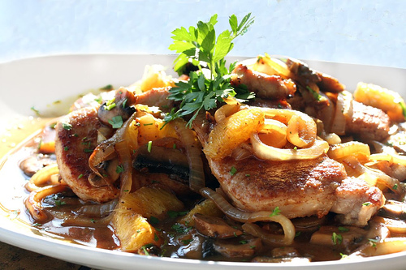
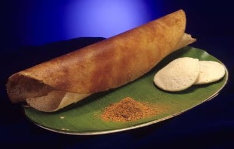

FAMOUS KERALA DISHES ARE:-
BHOOKARS RATINGS:-


This is the famous dish of kerela which is easy to make and delicious to eat. Lemon rice is a good option for lunch or dinner on those days when you are very lazy and dont feel like spending much (or any) time in the kitchen. And it is perfeclty healthy!
WHERE TO EAT - KALLAPAKKAM RESTAURAN T (ALLEPY)
 pork chops
pork chops
BHOOKARS RATINGS:-


Pork chops is an easy to make dish which when made properly, gives the feeling of dining in a fine restaurant! All you need to do is add a splash of soya sauce and vegetables to your pork chops and you can relax and relish it in peace.
WHERE TO EAT-RAWANADA PALACE (THEKDI)
 dosa idli
dosa idli
BHOOKARS RATINGS;-


Be it for breakfast, or for snacks, dosa-idli, fits all the lists.Idli is savory cake and dosa is a fermented crepe made of rice and black lentils. dip it in tangy chutney or spicy sambhar, and you will be experiencing one of India's most famous dishes.
WHERE TO EAT-ANAND RESTAURANT (KERALA)